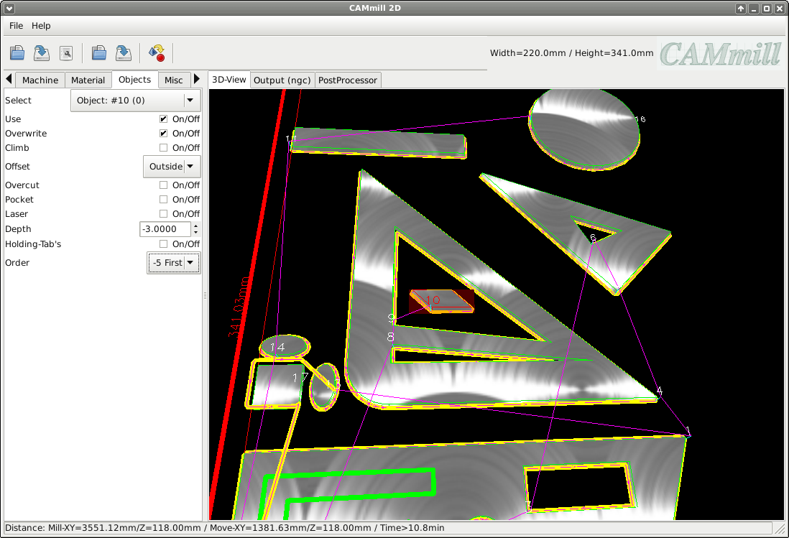

Objects
Object parameter
Select:
Object selection
Use:
Ignore object
Overwrite:
Global parameters are to be overwritten for this object
Climb:
Down-cut milling, in which the workpiece is moved in the direction of rotation of the milling cutter
Offset:
Selection of the tool offset (inside / none / outside)
Overcut:
For milling out inner edges that cannot be reached due to the tool radius
Pocket:
Not implemented, yet
Laser:
The 'tool' is moved to Z0.0 and switched on and off for each milling path
Depth:
Milling depth in mm (negative)
Holding-Tab's:
Activates / deactivates holding tabs for this object
Order:
Change the milling sequence (Auto = inner then outer objects / -1 -> -5 object is milled first / +1 -> +5 object is milled last)